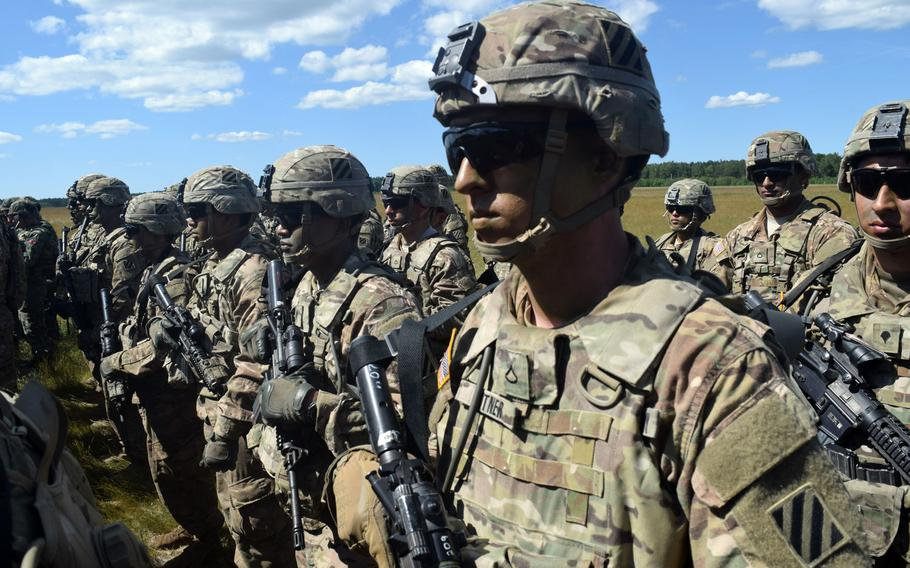

Things I have done...
United States Army
Spent the better part of 4 years in the active duty Army. My military occupational speciality (M.O.S.) was a 19D Cavalry Scout. I spent time around the country in various places, doing various training, and can probably claim an honorable veteran status for the remainder of my life.
Education
Before and after military enlistment, I attended Michigan Sate University, Lansing Community College, and Baker College.
Abroad Studies
My education has taken me to Spain, Costa Rica, and Hondoras. Specifically oriented on language and cultural studies.